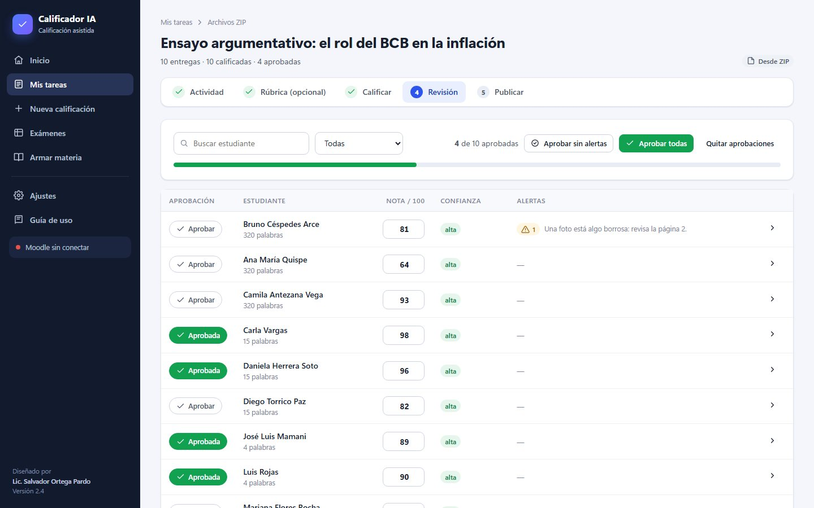
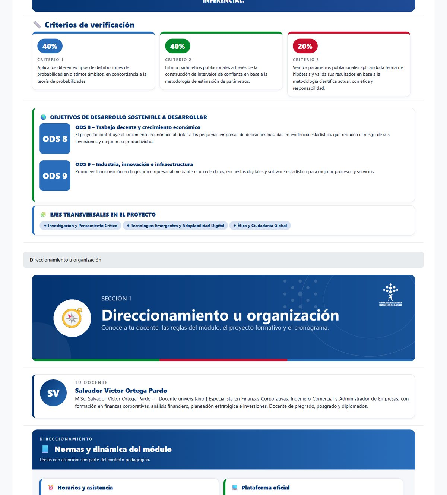
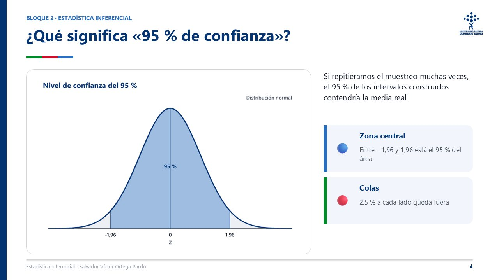
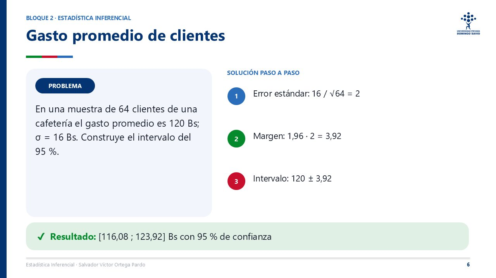
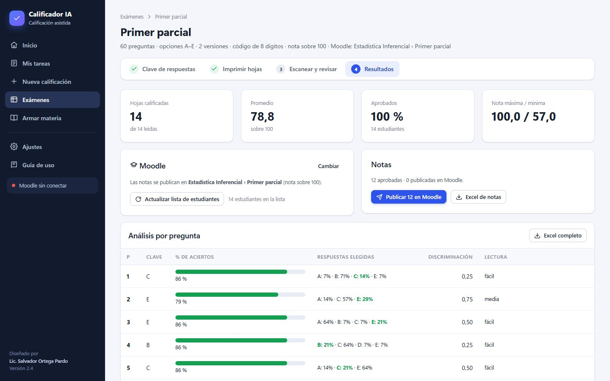
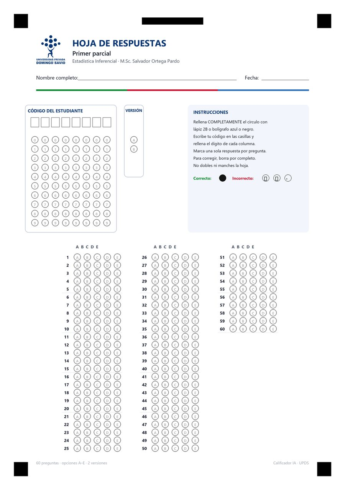
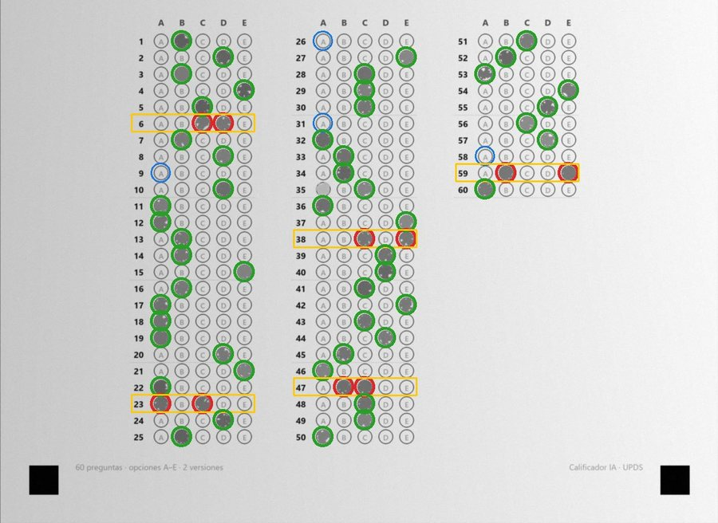

La IA califica las tareas de tus estudiantes —incluso fotos de trabajos hechos a mano—, arma tu materia con el Proyecto Formativo y el aula de Moodle, y corrige exámenes escaneando las hojas. Tú revisas y decides la nota.

De las entregas de Moodle a las notas publicadas, con tu rúbrica y tu revisión.
Pensado para la forma real en que trabajamos los docentes: Moodle, trabajos a mano, rúbricas y fechas que se cruzan.
Elige la actividad de Moodle y la app descarga las entregas solas. La IA aplica tu rúbrica criterio por criterio y redacta la retroalimentación con tu estilo.
Sube el Programa Analítico y la app propone el Proyecto Formativo con fechas del módulo, y prepara el aula de Moodle lista para restaurar.



Como ZipGrade, pero integrado con Moodle. Imprime la hoja de respuestas, fotografía las hojas con el celular o escanéalas en PDF, y listo.



Descarga el instalador, ábrelo y crea tu cuenta desde la app. Recibes 10 créditos de regalo.
Inicia sesión con tu cuenta institucional (Microsoft) en un clic. Solo una vez.
Elige la actividad, deja que la IA proponga las notas, apruébalas y publícalas en Moodle.
Sin suscripciones ni tarjetas internacionales. Compras créditos con QR desde la app y se acreditan en el día.
| Uso | Créditos aproximados |
|---|---|
| Calificar 1 trabajo (Claude Haiku, con fotos) | 0,03 – 0,1 |
| Calificar una tarea de 40 estudiantes | 2 – 4 |
| Armar una materia completa (Claude Sonnet) | 10 – 20 |
| Corregir exámenes escaneados | 0 (gratis) |
Los créditos dependen del largo de los trabajos y del modelo elegido. La app muestra el costo estimado antes de calificar.
Microsoft Defender SmartScreen impidió el inicio de una aplicación no reconocida. Ejecutar esta aplicación puede poner en riesgo su PC.
Más informaciónNo. La IA propone la nota por criterio con la evidencia del trabajo y un borrador de retroalimentación. Nada se publica en Moodle hasta que tú lo apruebas.
Las tareas, materias y exámenes se guardan en tu computadora. Para calificar, el contenido del trabajo se envía a la IA a través del servidor del Calificador y no se almacena allí: solo se registra cuántos créditos se usaron.
No. Solo creas tu cuenta y compras créditos con QR desde la app.
Funciona con Moodle 4 de la universidad, iniciando sesión con tu cuenta institucional (Microsoft). Para publicar notas usa los mismos permisos que tienes como docente.
El Excel y el aula siguen el formato del Proyecto Formativo de la UPDS (plantilla 2026). Las presentaciones, libros, ejercicios y autoevaluaciones sirven para cualquier materia.
No. Es una herramienta independiente creada por un docente para docentes. Tú decides cómo usarla en tus materias.
Normalmente el mismo día: subes la captura del comprobante y el administrador lo verifica.
Por ahora solo en Windows 10 u 11.
Descarga la app, crea tu cuenta y califica tu primera tarea hoy.
Descargar para Windows